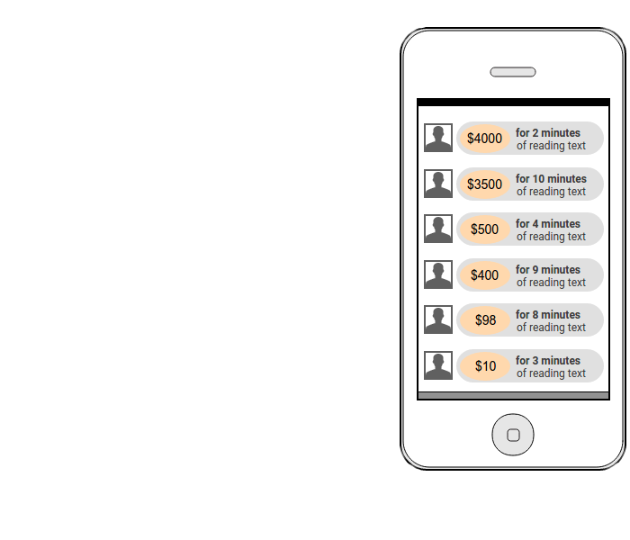
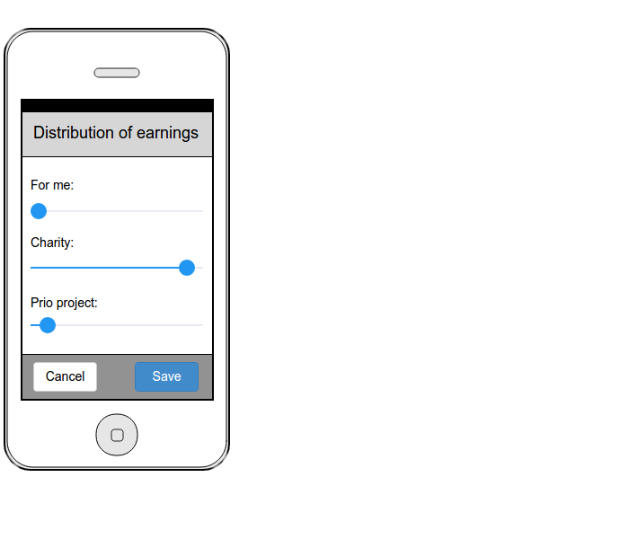
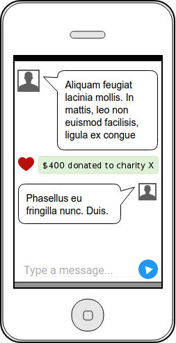

Prio
Rozpoczynając pracę nad pierwszą wersją chcieliśmy stworzyć idealną wyszukiwarkę i porównywarkę dla rynku księgarskiego. Z wielu przyczyn nie udało nam się to. Bogatsi o doświadczenia i nowe umiejętności, wracamy do "desek kreślarskich", by stworzyć dla Was serwis na jaki zasługujecie!


